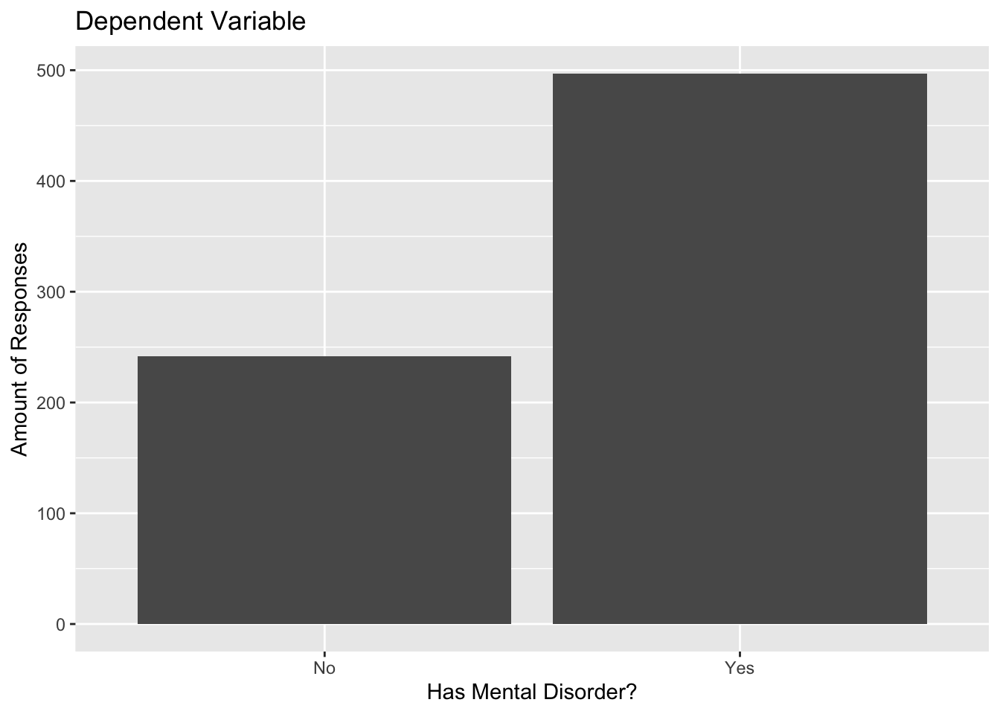
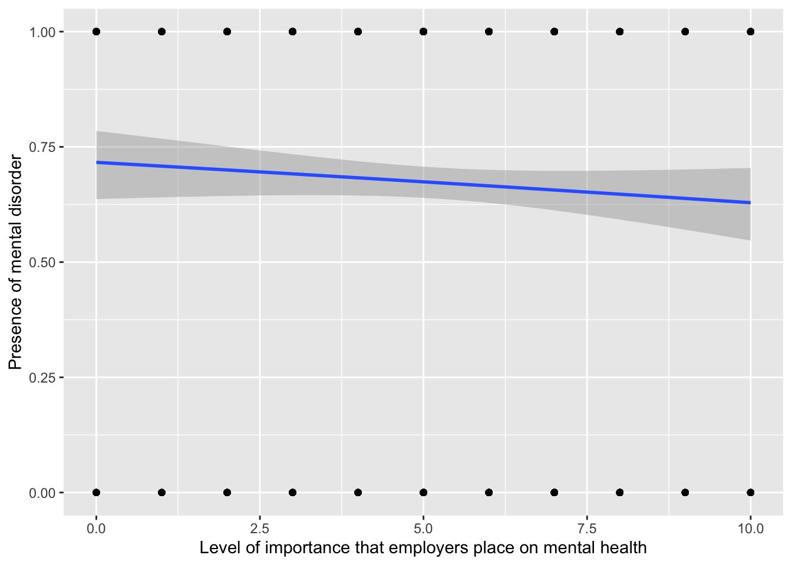

The Pandemic’s Toll on Mental Health: A Look at the Tech Sector
Author
Miguel Curiel
Published
April 20, 2023
Code
# load neccesary packageslibrary(tidyverse) # used for elementary data wrangling and visualizationlibrary(naniar) # used for missing values visualizationlibrary(summarytools) # used for table summarizing descriptive statisticslibrary(corrplot) # used for correlation plotslibrary(ggridges) # used for joint plotslibrary(boot) # used for the PRESS statisticlibrary(knitr) # used for table with statistics
Introduction
This project is part of University of Massachusetts (UMass) Amherst Data Analytics and Computational Social Science (DACSS) Master’s program. Specifically, this is a final project for the Introduction to Quantitative Analysis class and will focus on analyzing the state of mental health among workers in the technology industry - aka tech - which has been one of the highest employers in the twenty-first century. Not only that, but it has been praised for having some of the happiest workers12.
What has made the tech industry so appealing? A case study on Google published in the International Journal of Corporate Social Responsibility in 20173 points to several elements that make high-tech unique, such as having a distinct culture proposition, aligning individual behaviors to company-wide goals, having managers be coaches rather than bosses, and being able to interact with people from other cultures.
Evidently, Google is one-in-a-million tech company, but there are certainly commonalities shared with smaller new tech (startup) companies. Culture Amp, a company focused on surveying employees in startups, elaborated an analysis based on their results from 2015-2020 surveys4 and mention that elements such as an open and honest two-way communication, workplace flexibility, and fair division of workload, are what make new tech companies valued.
However, the previous data omits the downsides of such cultures. Besides the multiple blog posts and news articles one can find talking about burnout5, the darker side of tech also includes (but is not limited to) ageism6, gender inequality78, and even migration issues910.
Additionally, a survey lead by Blind in 202111 found that, out of 2400 workers in tech, 64% said their mental health is worse after the pandemic. What’s more, layoffs by the thousands, plummeting stock prices, and generalized revaluation of an entire industry’s value, are just few words that can describe what has happened to tech in 2022 and 2023. An industry that once employed over 5 million people in the US alone12 and had nearly 700 billion dollars in funding worldwide13 has now laid off over 300 thousand people14 and nearly halved in funding.
Research Question
It is reasonable to hypothesize that the aforementioned events will take a toll on the workers of this industry, but what has been the actual mental health state of the actors involved?
Research Question
What is the trend in mental health issues among workers in the technology industry from 2017 to 2021, as measured by survey data, and what factors may contribute to these changes?
Hypotheses
Based on the present research question, on previous studies, and on feedback from the first final project check in, I have removed two hypotheses which were the null hypotheses of the remaining hypotheses. This has been enacted to strengthen the argument made in the analysis. Additionally, the independent variables have been reduced (leaving the rest of the variables as possible confounders) to strengthen the argument made in this analysis.
Tip
H1: There has been an increase in the prevalence of mental health issues among workers in the technology industry from 2017 to 2021.
H2: The increase in mental health issues among workers in the technology industry from 2017 to 2021 is related to the level of importance that the employer gives to mental health.
Descriptive Statistics
To analyze the state of mental health and the contributing factors, I will rely on data provided by the Open Sourcing Mental Health (OSMH), specifically using their Mental Health in Tech Survey.
OSMH15 is a non-profit dedicated to raising awareness, educating, and providing resources to support mental wellness in the tech and open source communities. It began operations in 2013 and since 2014 it has conducted and published an annual or bi-annual survey analyzing several mental health indicators.
As of April 20, 2023, the 2022 survey has not yet been published. Therefore, this analysis employs historical data, specifically utilizing surveys conducted from 2017 through 2021. All datasets are publicly available on OSMH’s website or on Kaggle.
After downloading the raw survey responses and preprocessing the data, the dataset contains responses of 700+ participants, it has no null values and categorical variables have been harmonized.
Below you can find the offline (Microsoft Excel) and online (R) preprocessing steps taken, as well as a summary of the resulting dataframe.
Offline edits made on the raw files
A “year” column was added to differentiate between both files.
Data pertaining to insurance information (e.g., “Does you company provide a mental health insurance plan?”) was removed because in the 2019 it was optional and was, therefore, almost entirely blank.
Both files contained columns pertaining to the mental disorder each respondent may or may not have. However, these columns were inconsistent and could not be interpreted without making assumptions which may lead to an incorrect interpretation of the data. For that reason, these columns were removed.
The raw data files followed a title case naming convention (e.g., “Does your employer provide mental health resources?”). All column names were changed to a snake_case format (e.g., “employer_provides_mental_health_resources”).
The rest of the columns and data therein contained is left as is.
Code
## ONLINE EDITS MADE ON THE CONSOLIDATED FILE# temporarily set working directory to read in datasetwd("/Users/macuriels/Documents/Umass/umass_dacss_quantitativeanalysis/posts/_data")# read in consolidated file with 2017-2021 datadf <-read_csv("mhit.csv")# treating inconsistent binary code in column(s) of interestdf$sought_treatment <-ifelse(df$sought_treatment =="TRUE", 1, 0)# treating inconsistent gender naming conventionsdf$gender <-ifelse(grepl("female", df$gender, ignore.case =TRUE), "Female" ,ifelse(grepl("male", df$gender, ignore.case =TRUE), "Male" ,"Other"))# create new dataframe with columns of interestdf <- df |>select( year ,has_mental_disorder ,age ,gender ,race ,family_history_mental_illness ,had_mental_disorder ,sought_treatment ,willingness_to_share_with_friends ,tech_industry_supports_mh ,number_of_employees ,company_provides_mhcare ,anonymity_protected_if_use_resources ,easy_to_leave_for_mhcare ,comfortable_talking_to_supervisor ,comfortable_talking_to_coworkers_about_mh ,employer_mh_importance ,current_or_previous_employer_supportive )# remove rows with missing valuesdf <- df[complete.cases(df),]# remove columns with missing valuesdf <- df[,colSums(is.na(df)) ==0]# convert some columns to numericdf$age <-as.numeric(df$age)df$willingness_to_share_with_friends <-as.numeric(df$willingness_to_share_with_friends)# remove respondents under 18df <- df[df$age >18,]# remove respondents over 90df <- df[df$age <90,]# order company size by employee countdf$number_of_employees <-factor(df$number_of_employees , levels=c("1-5" ,"6-25" ,"26-100" ,"100-500" ,"500-1000" ,"More than 1000"))# leave only responses of interest within the dependent variabledf <-subset(df, has_mental_disorder %in%c("Yes", "No"))# convert dependent variable to a factordf$has_mental_disorder <-factor(df$has_mental_disorder)# export resulting dataframe to csvwrite.csv(df, file ="df.csv")
Code
## SUMMARY OF THE RESULTING DATAFRAMEdfSummary(df)
Data Frame Summary
df
Dimensions: 739 x 18
Duplicates: 0
-----------------------------------------------------------------------------------------------------------------------------------------------
No Variable Stats / Values Freqs (% of Valid) Graph Valid Missing
---- ------------------------------------------- ------------------------------ -------------------- --------------------- ---------- ---------
1 year Mean (sd) : 2018 (1.1) 2017 : 324 (43.8%) IIIIIIII 739 0
[numeric] min < med < max: 2018 : 204 (27.6%) IIIII (100.0%) (0.0%)
2017 < 2018 < 2021 2019 : 138 (18.7%) III
IQR (CV) : 2 (0) 2020 : 38 ( 5.1%) I
2021 : 35 ( 4.7%)
2 has_mental_disorder 1. No 242 (32.7%) IIIIII 739 0
[factor] 2. Yes 497 (67.3%) IIIIIIIIIIIII (100.0%) (0.0%)
3 age Mean (sd) : 35.4 (8.3) 46 distinct values : 739 0
[numeric] min < med < max: : : : : (100.0%) (0.0%)
19 < 35 < 66 : : : :
IQR (CV) : 11 (0.2) : : : : :
: : : : : : : .
4 gender 1. Female 222 (30.0%) IIIIII 739 0
[character] 2. Male 383 (51.8%) IIIIIIIIII (100.0%) (0.0%)
3. Other 134 (18.1%) III
5 race 1. American Indian or Alaska 1 ( 0.1%) 739 0
[character] 2. Asian 38 ( 5.1%) I (100.0%) (0.0%)
3. Black or African American 10 ( 1.4%)
4. Caucasian 1 ( 0.1%)
5. Hispanic 1 ( 0.1%)
6. I prefer not to answer 19 ( 2.6%)
7. More than one of the abov 26 ( 3.5%)
8. White 643 (87.0%) IIIIIIIIIIIIIIIII
6 family_history_mental_illness 1. I don't know 147 (19.9%) III 739 0
[character] 2. No 171 (23.1%) IIII (100.0%) (0.0%)
3. Yes 421 (57.0%) IIIIIIIIIII
7 had_mental_disorder 1. Don't Know 18 ( 2.4%) 739 0
[character] 2. No 198 (26.8%) IIIII (100.0%) (0.0%)
3. Possibly 75 (10.1%) II
4. Yes 448 (60.6%) IIIIIIIIIIII
8 sought_treatment Min : 0 0 : 631 (85.4%) IIIIIIIIIIIIIIIII 739 0
[numeric] Mean : 0.1 1 : 108 (14.6%) II (100.0%) (0.0%)
Max : 1
9 willingness_to_share_with_friends Mean (sd) : 7 (2.7) 11 distinct values : 739 0
[numeric] min < med < max: : : (100.0%) (0.0%)
0 < 8 < 10 . : : : :
IQR (CV) : 4 (0.4) : : : : : :
: : : : : : : : : :
10 tech_industry_supports_mh Mean (sd) : 2.6 (0.9) 1 : 84 (11.4%) II 739 0
[numeric] min < med < max: 2 : 228 (30.9%) IIIIII (100.0%) (0.0%)
1 < 3 < 5 3 : 301 (40.7%) IIIIIIII
IQR (CV) : 1 (0.3) 4 : 117 (15.8%) III
5 : 9 ( 1.2%)
11 number_of_employees 1. 1-5 15 ( 2.0%) 739 0
[factor] 2. 6-25 84 (11.4%) II (100.0%) (0.0%)
3. 26-100 136 (18.4%) III
4. 100-500 208 (28.1%) IIIII
5. 500-1000 60 ( 8.1%) I
6. More than 1000 236 (31.9%) IIIIII
12 company_provides_mhcare 1. I don't know 159 (21.5%) IIII 739 0
[character] 2. No 33 ( 4.5%) (100.0%) (0.0%)
3. Not eligible for coverage 18 ( 2.4%)
4. Yes 529 (71.6%) IIIIIIIIIIIIII
13 anonymity_protected_if_use_resources 1. I don't know 433 (58.6%) IIIIIIIIIII 739 0
[character] 2. No 22 ( 3.0%) (100.0%) (0.0%)
3. Yes 284 (38.4%) IIIIIII
14 easy_to_leave_for_mhcare 1. Difficult 63 ( 8.5%) I 739 0
[character] 2. I don't know 129 (17.5%) III (100.0%) (0.0%)
3. Neither easy nor difficul 82 (11.1%) II
4. Somewhat difficult 89 (12.0%) II
5. Somewhat easy 218 (29.5%) IIIII
6. Very easy 158 (21.4%) IIII
15 comfortable_talking_to_supervisor 1. Maybe 251 (34.0%) IIIIII 739 0
[character] 2. No 183 (24.8%) IIII (100.0%) (0.0%)
3. Yes 305 (41.3%) IIIIIIII
16 comfortable_talking_to_coworkers_about_mh 1. Maybe 333 (45.1%) IIIIIIIII 739 0
[character] 2. No 164 (22.2%) IIII (100.0%) (0.0%)
3. Yes 242 (32.7%) IIIIII
17 employer_mh_importance Mean (sd) : 5.1 (2.4) 11 distinct values : 739 0
[numeric] min < med < max: : (100.0%) (0.0%)
0 < 5 < 10 : .
IQR (CV) : 3.5 (0.5) . . : . : : : :
: : : : : : : : . :
18 current_or_previous_employer_supportive 1. Maybe/Not sure 168 (22.7%) IIII 739 0
[character] 2. No 244 (33.0%) IIIIII (100.0%) (0.0%)
3. Yes, I experienced 179 (24.2%) IIII
4. Yes, I observed 148 (20.0%) IIII
-----------------------------------------------------------------------------------------------------------------------------------------------
Exploratory Data Analysis
In the following section, plots and summaries will be included to explore and further describe the dataset.
Starting off with a plot visualizing the dependent variable distribution, we can see that we are dealing with a binary (categorical) variable where participants indicate whether they have mental disorders or not - and approximately 67% of them say they do have a mental disorder.
Code
# bar plot of dependent variableggplot(data =data.frame(Category =names(table(df$has_mental_disorder)) , Count =as.numeric(table(df$has_mental_disorder))) , aes(x = Category, y = Count)) +geom_bar(stat ="identity") +labs(title ="Dependent Variable" , x ="Has Mental Disorder?" , y ="Amount of Responses")

Following with a plot to visualize the independent variables, where participants indicate the level of importance that there employers place on mental health, the responses range from 0 to 10 (0 is the least level of importance and 10 is the highest). The data is roughly normally distributed, having the greatest concentration at 5 and it decreases more or less evenly as it moves away from the mean.
Lastly, we will create a grid plots with the remaining confounder variables which includes information such as gender, company policies, and willingness to share mental health status with friends.
Below is a summary of findings from the exploratory data analysis:
From the dependent variable:
Do respondents have mental disorders as of the time of filling out the survey? 67% of the respondents say they currently have a mental disorder.
From the numerical independent variables:
Do employers care about employees’ mental health? On a scale of 1-10, most respondents believe their employers have an average (5) care for mental health.
Responses per year: The number of respondents has steadily decreased over the years, starting with over 300 responses in 2017 and settling at less than 50 in 2021.
From the numerical confounder variables:
Age: Most respondents are in their late twenties or in their forties.
Willingness to share mental health status with friends and family: On a scale of 1-10, most respondents indicate that they are willing to share that they have a mental disorder with their friends and family.
Mental health support in the tech industry: On a scale of 1-5, most respondents say there’s an average (3) or below average (2) support towards employees’ mental health issues in the tech industry.
From the categorical confounder variables:
Gender: Roughly 50% of the participants identify as male, versus 30% that are female, and the remaining fall under other category.
Race: Most respondents are White (87%) , followed by Asian (5%), more than one race (3%), prefer not to answer (3%). From there, the rest of the races are diluted and have less than 2% each.
Company size: Most participants (32%) work in a company that has over 1000 employees. From there, 100-500 is the most common (27%).
Do employers provide mental health benefits? Most participants say their employers do provide mental health care (71%), followed by respondents that do not know (21%).
Is it easy to ask for time off if employees need to take care of their mental health? This is a mixed bag in the sense that while most say it is somewhat easy (30%) or that it is very easy (21%), there are also people that say they don’t know (18%) or that it is somewhat difficult (12%).
Are employees comfortable talking about their mental health with supervisors? This is also a mixed bag as most say they are comfortable (41%), but there are also a lot of responses for maybe (34%) and no (25%).
Are employees comfortable talking about their mental health with coworkers? Similarly, this is a mixed bag as most say maybe (45%), but there’s also a great deal of yes (33%) and no (22%).
Have employees’ had or observed proper handling of mental health situations by their current or previous employer? Yet another mixed bag; while most say they have not encountered this situation (33%), a lot are also unsure (24%), have experienced a proper handling (23%) or have observed a proper handling (20%).
Did participants use to have a mental disorder? Most respondents (60%) indicate that they used to have a mental disorder.
History of mental illness? Most respondents (57%) indicate that they have a family history of mental illness.
Have employees sought for assistance from a mental health professional? Most respondents (86%) have never sought a mental health professional for assistance.
Hypothesis Testing
The previous section already alluded to the variables of interest, which are as follows:
Main Variables of Interest
DEPENDENT VARIABLE
has_mental_disorder: Do you currently have a mental health disorder?
INDEPENDENT VARIABLES
year (for h1): In what year was the survey conducted?
employer_mh_importance (for h2): Overall, how much importance does your employer place on mental health?
Expand to view the Confounder Variables
CONFOUNDER VARIABLES
age: What is your age?
gender: What is your gender?
race: What is your race?
family_history_mental_illness: Do you have a family history of mental illness?
had_mental_disorder: Have you had a mental health disorder in the past?
sought_treatment: Have you ever sought treatment for a mental health disorder from a mental health professional?
willingness_to_share_with_friends: How willing would you be to share with friends and family that you have a mental illness?
number_of_employees: How many employees does your company or organization have?
company_provides_mhcare: Does your employer provide mental health benefits as part of healthcare coverage?
anonymity_protected_if_use_resources: Is your anonymity protected if you choose to take advantage of mental health or substance abuse treatment resources provided by your employer?
easy_to_leave_for_mhcare: If a mental health issue prompted you to request a medical leave from work, how easy or difficult would it be to ask for that leave?
comfortable_talking_to_supervisor: Would you feel comfortable discussing a mental health issue with your direct supervisor(s)?
comfortable_talking_to_coworkers_about_mh: Would you feel comfortable discussing a mental health issue with your coworkers?
tech_industry_supports_mh: Overall, how well do you think the tech industry supports employees with mental health issues?
current_or_previous_employer_supportive: Have you observed or experienced a supportive or well handled response to a mental health issue in your current or previous workplace?
Testing H1
To answer the first research question - whether there has been an increase in mental health disorders throughout the years - we can run a Chi-squared of independence. This will allow us to test whether there is an association between two variables (year and mental disorders) in the population.
The test is conducted by comparing the observed frequencies of the data to the expected frequencies and it assumes that data is independent and that the expected frequencies are not too small (as a rule of thumb, no cell of the contingency table should have less than 5 observations, and in the present analysis the smallest cell has 7).
Code
# create a contingency table of the datacont_tbl <-table(df$has_mental_disorder, df$year)# print contingency table# cont_tbl# cat("Contingency Table:\n")# table(df$has_mental_disorder, df$year)print_table <-function(var1, var2, annotation) {cat(paste0(annotation, "\n"))print(table(df$has_mental_disorder, df$year))}print_table(var1, var2, "Contingency Table")
The results of the Chi-squared test suggest that the association between the two variables - year and mental disorders - could plausibly be due to chance alone. In other words, there is not enough evidence to suggest that mental disorders have increased over the years among mental health workers.
Testing H2
The second hypothesis does not pertain to mental health over the years; rather, it seeks to inquire whether the importance that employers place on mental health is associated to mental disorders. Since we are dealing with a binary categorical variable (mental disorders = yes/no) and a numerical discrete variable (valued placed by employers = 1-10), a logistic regression model can help test this hypothesis.
A logistic regression uses the logistic function to estimate the probability of the binary response variable taking on a certain value given the values of the predictor variables. Additionally, we first experiment the model’s performance with a single predictor variable, and we will then include control variables to compare the models.
Call:
glm(formula = has_mental_disorder ~ employer_mh_importance, family = binomial,
data = df)
Deviance Residuals:
Min 1Q Median 3Q Max
-1.5875 -1.4616 0.8735 0.9028 0.9631
Coefficients:
Estimate Std. Error z value Pr(>|z|)
(Intercept) 0.92657 0.18661 4.965 6.86e-07 ***
employer_mh_importance -0.03991 0.03240 -1.232 0.218
---
Signif. codes: 0 '***' 0.001 '**' 0.01 '*' 0.05 '.' 0.1 ' ' 1
(Dispersion parameter for binomial family taken to be 1)
Null deviance: 934.65 on 738 degrees of freedom
Residual deviance: 933.12 on 737 degrees of freedom
AIC: 937.12
Number of Fisher Scoring iterations: 4
Code
# create a data frame with the predictor variable and binary outcomedata_df <-data.frame(predictor_variable = df$employer_mh_importance , binary_outcome = df$has_mental_disorder)# create the plot with the logistic regression line and data pointsggplot(data_df, aes(x = predictor_variable, y = binary_outcome)) +geom_point() +stat_smooth(method ="glm", method.args =list(family ="binomial"), se =TRUE) +xlab("Level of importance that employers place on mental health") +ylab("Presence of mental disorder")

From the simple logistic model, we find that the relation is not statistically significant. This is initially proven by the associated p-value (.21) and is further corroborated by the plot (we expect an S-shaped curve, but get a slightly negative straight line).
While this initially suggests there is not a strong relationship between variables, it could also be that the model is not properly constructed. In the next section, I will explore an enhanced model that includes interaction effects.
Model Comparisons
Upon further experimentation, I checked for nonlinearity by squaring ( ^2 ) and cubing ( ^3 ) the predictor variable, and this did not improve model performance. What did improve the independent’s variable significance was including several interaction effects which I theorized are related to mental disorders.
More specifically, I included gender, comfort talking to supervisor and coworkers about mental health, whether the current or previous employer was supportive when it came to mental health, whether participants are willing to share their mental health status with friends, the number of employees of a company, and whether the employer provides mental health care benefits or not.
This also means that certain variables were excluded. The confounding variables that were excluded were age, race, history of mental disorders (personal and familiar), whether individuals have sought for treatment, whether anonymity is protected if an employee uses mental health resources, whether it is easy to leave work for mental health care, and the degree to which they believe the tech industry supports mental health. These were excluded because they did not improve the model’s performance, most likely due to irrelevance and colinearity (e.g., it is expected that history of mental disorders will be highly related to current mental disorders).
Below is the code used to generate the enhanced model and its summary.
Call:
glm(formula = has_mental_disorder ~ employer_mh_importance *
gender + comfortable_talking_to_supervisor + comfortable_talking_to_coworkers_about_mh +
current_or_previous_employer_supportive + willingness_to_share_with_friends +
number_of_employees + company_provides_mhcare, family = binomial,
data = df)
Deviance Residuals:
Min 1Q Median 3Q Max
-2.5944 -0.9750 0.4833 0.8572 2.0313
Coefficients:
Estimate Std. Error
(Intercept) -0.2280332 0.7907531
employer_mh_importance -0.1413941 0.0765476
genderMale -0.7834124 0.5238137
genderOther -0.6358014 0.6643781
comfortable_talking_to_supervisorNo -0.1948260 0.2549591
comfortable_talking_to_supervisorYes -0.5541093 0.2208782
comfortable_talking_to_coworkers_about_mhNo 0.3032668 0.2472602
comfortable_talking_to_coworkers_about_mhYes 0.0250643 0.2191904
current_or_previous_employer_supportiveNo -0.2387184 0.2317069
current_or_previous_employer_supportiveYes, I experienced 1.4842861 0.3169049
current_or_previous_employer_supportiveYes, I observed -0.3522107 0.2526155
willingness_to_share_with_friends 0.2057660 0.0369144
number_of_employees6-25 0.4069090 0.6271682
number_of_employees26-100 -0.1510447 0.6098975
number_of_employees100-500 0.1889658 0.6051569
number_of_employees500-1000 0.7769460 0.6632556
number_of_employeesMore than 1000 0.6359351 0.6051386
company_provides_mhcareNo 0.5415798 0.4453876
company_provides_mhcareNot eligible for coverage / NA 1.0899889 0.7372048
company_provides_mhcareYes 0.7305826 0.2157394
employer_mh_importance:genderMale 0.0008804 0.0883406
employer_mh_importance:genderOther 0.0662555 0.1116064
z value Pr(>|z|)
(Intercept) -0.288 0.773060
employer_mh_importance -1.847 0.064727 .
genderMale -1.496 0.134760
genderOther -0.957 0.338574
comfortable_talking_to_supervisorNo -0.764 0.444780
comfortable_talking_to_supervisorYes -2.509 0.012119 *
comfortable_talking_to_coworkers_about_mhNo 1.227 0.220007
comfortable_talking_to_coworkers_about_mhYes 0.114 0.908961
current_or_previous_employer_supportiveNo -1.030 0.302888
current_or_previous_employer_supportiveYes, I experienced 4.684 2.82e-06 ***
current_or_previous_employer_supportiveYes, I observed -1.394 0.163240
willingness_to_share_with_friends 5.574 2.49e-08 ***
number_of_employees6-25 0.649 0.516465
number_of_employees26-100 -0.248 0.804401
number_of_employees100-500 0.312 0.754844
number_of_employees500-1000 1.171 0.241433
number_of_employeesMore than 1000 1.051 0.293308
company_provides_mhcareNo 1.216 0.223995
company_provides_mhcareNot eligible for coverage / NA 1.479 0.139263
company_provides_mhcareYes 3.386 0.000708 ***
employer_mh_importance:genderMale 0.010 0.992048
employer_mh_importance:genderOther 0.594 0.552744
---
Signif. codes: 0 '***' 0.001 '**' 0.01 '*' 0.05 '.' 0.1 ' ' 1
(Dispersion parameter for binomial family taken to be 1)
Null deviance: 934.65 on 738 degrees of freedom
Residual deviance: 777.57 on 717 degrees of freedom
AIC: 821.57
Number of Fisher Scoring iterations: 5
With the above model we can see that the explanatory variable’s (employer_mh_importance) associated p-value has dropped to ~0.07. Even though it is still not statistically significant if we use 0.05 as the cut-off point, it is almost statistically significant. Additionally, there are several other variables that are indeed relevant to the model.
Now we will run some additional metrics to compare both models.
Code
# function to calculate mean of the PRESS statisticmean_delta <-sapply(list(log_simple, log_interaction), function(model) {cv.glm(df, model, K =nrow(df))$delta[1]})# create a data frame with the metricsmetrics_df <-data.frame(Model =c("Simple Logistic Regression", "Logistic Regression w/Interactions"),AIC =c(AIC(log_simple), AIC(log_interaction)),BIC =c(BIC(log_simple), BIC(log_interaction)),PRESS = mean_delta)# print the table using kable()kable(metrics_df, caption ="Model Evaluation Metrics")
Model Evaluation Metrics
Model
AIC
BIC
PRESS
Simple Logistic Regression
937.1210
946.3316
0.2209724
Logistic Regression w/Interactions
821.5691
922.8856
0.1885228
As we can see, the statistics suggest that no model is ideal (i.e., the numbers are high). However, the logistic regression model with interactions outperformed the simple logistic regression model according to all statistics. The adjusted R-squared was not added as it yielded null results, which is likely due to there being multicollinearity among the predictors (e.g., it is likely that variables such as comfort talking to supervisor versus coworkers is very similar).
From the statistics used, the Akaike Information Criterion (AIC) and the Bayesian Information Criterion (BIC) measure goodness of fit, and the Predicted Residual Sum of Squares (PRESS) measures the ability to predict on new data. In all cases, lower numbers are better, which reiterates that the model with interactions is slightly better.
Diagnostics
Having the logistic regression with interaction effects as the better model, we will now generate a diagnostics grid plot to have a comprehensive evaluation of the final model.
Residuals vs Fitted: The model does not seem to be capturing some aspect of the data as data is not randomly distributed around zero (rather, there are patterns in the data).
Normal Q-Q: The residuals do seem to follow a relatively straight line, which helps fulfill the assumption of having data normally distributed.
Scale-Location: There are visible patterns, which goes against the ideal distribution of this plot (equal distribution across a horizontal line). This means that the model is likely over or underfitting (which reiterates the point made in the Residuals vs Fitted plot).
Residuals vs Leverage: Since data is more or less close to the dotted line, this means there are no notable outliers in the data (which reiterates the point made in the Normal Q-Q plot).
Conclusion
TBD.
Footnotes
Fox, M. (2016, November 11). Why Are Tech Workers So Satisfied With Their Jobs? Retrieved March 17, 2023, from https://www.forbes.com/sites/meimeifox/2016/11/11/why-are-tech-workers-so-satisfied-with-their-jobs/?sh=4eac1918a059↩︎
Wronski, L., & Cohen, J. (2019, November 4). This is the industry sector that has some of the happiest workers in America. Retrieved March 17, 2023, from https://www.cnbc.com/2019/11/04/this-is-the-industry-that-has-some-of-the-happiness-workers-in-america.html↩︎
Kim, K. T. (2017). GOOGLE: A reflection of culture, leader, and management. International Journal of Corporate Social Responsibility, 2(10). https://doi.org/10.1186/s40991-017-0021-0↩︎
McPherson, J. (n.d.). Tech company cultures are not all the same. Culture Amp. Retrieved March 17, 2023, from https://www.cultureamp.com/blog/tech-company-culture↩︎
Goncharov, A. (2023, March 13). How I burnt out in FAANG, but my job was not the problem. Blog.Goncharov.ai. Retrieved March 17, 2023, from https://blog.goncharov.ai/how-i-burnt-out-in-faang-but-my-job-was-not-the-problem↩︎
Rosales, A., & Jakob, S. (2021). Perceptions of age in contemporary tech. Sciendo, 42(1), 79-91. https://doi.org/10.2478/nor-2021-0021↩︎
Mickey, E. L. (2021). The Organization of Networking and Gender Inequality in the New Economy: Evidence from the Tech Industry. Work & Occupations, 49(4), 383-420. https://doi.org/10.1177/07308884221102134↩︎
Hardey, M. (2020). The Culture of Women in Tech : An Unsuitable Job for a Woman (1st ed.). Emerald Publishing.↩︎
Banerjee, P., & Rincón, L. (2019). Trouble in Tech Paradise. Journal of Water Resources Planning & Management, 145(4), 24-29. https://doi.org/10.1177/1536504219854714↩︎
Matloff, N. (2013). Immigration and the tech industry: As a labour shortage remedy, for innovation, or for cost savings? Migration Letters, 10(2), 210-227. ISSN: 1741-8984 Online ISSN: 1741-8992↩︎
Blind (2021, January 29). Deteriorating Mental Health In The Workplace. Retrieved March 17, 2023, from https://www.teamblind.com/blog/index.php/2021/01/29/deteriorating-mental-health-in-the-workplace/↩︎
The United States Bureau of Labor and Statistics via CompTIA (2023, March 3). Cyberstates 2021: The Definitive Guide to the Tech Industry and Workforce. Retrieved March 17, 2023, from https://www.comptia.org/content/tech-jobs-report↩︎
Crunchbase News. (2023, January 5). Global VC Funding on a Slide since Q4 2022. Retrieved March 17, 2023, from https://news.crunchbase.com/venture/global-vc-funding-slide-q4-2022↩︎
Layoffs.fyi. (n.d.). Layoffs.fyi - Tracking all tech startup layoffs since COVID-19. https://layoffs.fyi↩︎
Open Sourcing Mental Health (n.d.). About OSMH. Retrieved March 18, 2023, from https://osmhhelp.org/about/about-osmi.html↩︎
Source Code
---title: "Final Project Check In 2"author: "Miguel Curiel"description: "The Pandemic's Toll on Mental Health: A Look at the Tech Sector"date: "04/20/2023"format: html: toc: true code-fold: true code-copy: true code-tools: truecategories: - finalpart2 - mental health - tech industry - covid-19 - layoffs---```{r setup, include=FALSE}knitr::opts_chunk$set(warning =FALSE, message =FALSE) ``````{r, eval=TRUE}# load neccesary packageslibrary(tidyverse) # used for elementary data wrangling and visualizationlibrary(naniar) # used for missing values visualizationlibrary(summarytools) # used for table summarizing descriptive statisticslibrary(corrplot) # used for correlation plotslibrary(ggridges) # used for joint plotslibrary(boot) # used for the PRESS statisticlibrary(knitr) # used for table with statistics```# IntroductionThis project is part of University of Massachusetts (UMass) Amherst Data Analytics and Computational Social Science (DACSS) Master's program. Specifically, this is a final project for the Introduction to Quantitative Analysis class and will focus on **analyzing the state of mental health among workers in the technology industry** - aka tech - which has been one of the highest employers in the twenty-first century. Not only that, but it has been praised for having some of the happiest workers[^1][^2].[^1]: Fox, M. (2016, November 11). *Why Are Tech Workers So Satisfied With Their Jobs?* Retrieved March 17, 2023, from https://www.forbes.com/sites/meimeifox/2016/11/11/why-are-tech-workers-so-satisfied-with-their-jobs/?sh=4eac1918a059[^2]: Wronski, L., & Cohen, J. (2019, November 4). *This is the industry sector that has some of the happiest workers in America*. Retrieved March 17, 2023, from https://www.cnbc.com/2019/11/04/this-is-the-industry-that-has-some-of-the-happiness-workers-in-america.htmlWhat has made the tech industry so appealing? A case study on Google published in the International Journal of Corporate Social Responsibility in 2017[^3] points to several elements that make high-tech unique, such as having a distinct culture proposition, aligning individual behaviors to company-wide goals, having managers be coaches rather than bosses, and being able to interact with people from other cultures.[^3]: Kim, K. T. (2017). GOOGLE: A reflection of culture, leader, and management. *International Journal of Corporate Social Responsibility*, *2*(10). https://doi.org/10.1186/s40991-017-0021-0Evidently, Google is one-in-a-million tech company, but there are certainly commonalities shared with smaller new tech (startup) companies. Culture Amp, a company focused on surveying employees in startups, elaborated an analysis based on their results from 2015-2020 surveys[^4] and mention that elements such as an open and honest two-way communication, workplace flexibility, and fair division of workload, are what make new tech companies valued.[^4]: McPherson, J. (n.d.). *Tech company cultures are not all the same*. Culture Amp. Retrieved March 17, 2023, from https://www.cultureamp.com/blog/tech-company-cultureHowever, the previous data omits the downsides of such cultures. Besides the multiple blog posts and news articles one can find talking about burnout[^5], the darker side of tech also includes (but is not limited to) ageism[^6], gender inequality[^7][^8], and even migration issues[^9][^10].[^5]: Goncharov, A. (2023, March 13). *How I burnt out in FAANG, but my job was not the problem*. Blog.Goncharov.ai. Retrieved March 17, 2023, from https://blog.goncharov.ai/how-i-burnt-out-in-faang-but-my-job-was-not-the-problem[^6]: Rosales, A., & Jakob, S. (2021). Perceptions of age in contemporary tech. *Sciendo*, *42*(1), 79-91. https://doi.org/10.2478/nor-2021-0021[^7]: Mickey, E. L. (2021). The Organization of Networking and Gender Inequality in the New Economy: Evidence from the Tech Industry. *Work & Occupations*, *49*(4), 383-420. https://doi.org/10.1177/07308884221102134[^8]: Hardey, M. (2020). *The Culture of Women in Tech : An Unsuitable Job for a Woman* (1st ed.). Emerald Publishing.[^9]: Banerjee, P., & Rincón, L. (2019). Trouble in Tech Paradise. *Journal of Water Resources Planning & Management*, *145*(4), 24-29. https://doi.org/10.1177/1536504219854714[^10]: Matloff, N. (2013). Immigration and the tech industry: As a labour shortage remedy, for innovation, or for cost savings? *Migration Letters*, *10*(2), 210-227. ISSN: 1741-8984 Online ISSN: 1741-8992Additionally, a survey lead by Blind in 2021[^11] found that, out of 2400 workers in tech, 64% said their mental health is worse after the pandemic. What's more, layoffs by the thousands, plummeting stock prices, and generalized revaluation of an entire industry's value, are just few words that can describe what has happened to tech in 2022 and 2023. An industry that once employed over 5 million people in the US alone[^12] and had nearly 700 billion dollars in funding worldwide[^13] has now laid off over 300 thousand people[^14] and nearly halved in funding.[^11]: Blind (2021, January 29). *Deteriorating Mental Health In The Workplace*. Retrieved March 17, 2023, from https://www.teamblind.com/blog/index.php/2021/01/29/deteriorating-mental-health-in-the-workplace/[^12]: The United States Bureau of Labor and Statistics via CompTIA (2023, March 3). *Cyberstates 2021: The Definitive Guide to the Tech Industry and Workforce*. Retrieved March 17, 2023, from https://www.comptia.org/content/tech-jobs-report[^13]: Crunchbase News. (2023, January 5). *Global VC Funding on a Slide since Q4 2022*. Retrieved March 17, 2023, from https://news.crunchbase.com/venture/global-vc-funding-slide-q4-2022[^14]: Layoffs.fyi. (n.d.). *Layoffs.fyi - Tracking all tech startup layoffs since COVID-19*. https://layoffs.fyi------------------------------------------------------------------------# Research QuestionIt is reasonable to hypothesize that the aforementioned events will take a toll on the workers of this industry, but what has been the actual mental health state of the actors involved?::: callout-tip## Research QuestionWhat is the trend in mental health issues among workers in the technology industry from 2017 to 2021, as measured by survey data, and what factors may contribute to these changes?:::------------------------------------------------------------------------# HypothesesBased on the present research question, on previous studies, and on feedback from the first final project check in, I have removed two hypotheses which were the null hypotheses of the remaining hypotheses. This has been enacted to strengthen the argument made in the analysis. Additionally, the independent variables have been reduced (leaving the rest of the variables as possible confounders) to strengthen the argument made in this analysis.::: callout-tip- H1: There has been an increase in the prevalence of mental health issues among workers in the technology industry from 2017 to 2021.- H2: The increase in mental health issues among workers in the technology industry from 2017 to 2021 is related to the level of importance that the employer gives to mental health.:::------------------------------------------------------------------------# Descriptive StatisticsTo analyze the state of mental health and the contributing factors, I will rely on data provided by the Open Sourcing Mental Health (OSMH), specifically using their Mental Health in Tech Survey.OSMH[^15] is a non-profit dedicated to raising awareness, educating, and providing resources to support mental wellness in the tech and open source communities. It began operations in 2013 and since 2014 it has conducted and published an annual or bi-annual survey analyzing several mental health indicators.[^15]: Open Sourcing Mental Health (n.d.). *About OSMH*. Retrieved March 18, 2023, from https://osmhhelp.org/about/about-osmi.htmlAs of April 20, 2023, the 2022 survey has not yet been published. Therefore, this analysis employs historical data, specifically utilizing surveys conducted from 2017 through 2021. All datasets are publicly available on OSMH's [website](https://osmhhelp.org/research.html) or on [Kaggle](https://www.kaggle.com/osmihelp/datasets).After downloading the raw survey responses and preprocessing the data, the dataset contains responses of 700+ participants, it has no null values and categorical variables have been harmonized.Below you can find the offline (Microsoft Excel) and online (R) preprocessing steps taken, as well as a summary of the resulting dataframe.::: {.callout-note collapse="true"}## Offline edits made on the raw files- A "year" column was added to differentiate between both files.- Data pertaining to insurance information (e.g., "Does you company provide a mental health insurance plan?") was removed because in the 2019 it was optional and was, therefore, almost entirely blank.- Both files contained columns pertaining to the mental disorder each respondent may or may not have. However, these columns were inconsistent and could not be interpreted without making assumptions which may lead to an incorrect interpretation of the data. For that reason, these columns were removed.- The raw data files followed a title case naming convention (e.g., "Does your employer provide mental health resources?"). All column names were changed to a snake_case format (e.g., "employer_provides_mental_health_resources").- The rest of the columns and data therein contained is left as is.:::```{r, eval=TRUE}## ONLINE EDITS MADE ON THE CONSOLIDATED FILE# temporarily set working directory to read in datasetwd("/Users/macuriels/Documents/Umass/umass_dacss_quantitativeanalysis/posts/_data")# read in consolidated file with 2017-2021 datadf <-read_csv("mhit.csv")# treating inconsistent binary code in column(s) of interestdf$sought_treatment <-ifelse(df$sought_treatment =="TRUE", 1, 0)# treating inconsistent gender naming conventionsdf$gender <-ifelse(grepl("female", df$gender, ignore.case =TRUE), "Female" ,ifelse(grepl("male", df$gender, ignore.case =TRUE), "Male" ,"Other"))# create new dataframe with columns of interestdf <- df |>select( year ,has_mental_disorder ,age ,gender ,race ,family_history_mental_illness ,had_mental_disorder ,sought_treatment ,willingness_to_share_with_friends ,tech_industry_supports_mh ,number_of_employees ,company_provides_mhcare ,anonymity_protected_if_use_resources ,easy_to_leave_for_mhcare ,comfortable_talking_to_supervisor ,comfortable_talking_to_coworkers_about_mh ,employer_mh_importance ,current_or_previous_employer_supportive )# remove rows with missing valuesdf <- df[complete.cases(df),]# remove columns with missing valuesdf <- df[,colSums(is.na(df)) ==0]# convert some columns to numericdf$age <-as.numeric(df$age)df$willingness_to_share_with_friends <-as.numeric(df$willingness_to_share_with_friends)# remove respondents under 18df <- df[df$age >18,]# remove respondents over 90df <- df[df$age <90,]# order company size by employee countdf$number_of_employees <-factor(df$number_of_employees , levels=c("1-5" ,"6-25" ,"26-100" ,"100-500" ,"500-1000" ,"More than 1000"))# leave only responses of interest within the dependent variabledf <-subset(df, has_mental_disorder %in%c("Yes", "No"))# convert dependent variable to a factordf$has_mental_disorder <-factor(df$has_mental_disorder)# export resulting dataframe to csvwrite.csv(df, file ="df.csv")``````{r, eval=TRUE, echo=TRUE}## SUMMARY OF THE RESULTING DATAFRAMEdfSummary(df)```------------------------------------------------------------------------# Exploratory Data AnalysisIn the following section, plots and summaries will be included to explore and further describe the dataset.Starting off with a plot visualizing the dependent variable distribution, we can see that we are dealing with a binary (categorical) variable where participants indicate whether they have mental disorders or not - and approximately 67% of them say they do have a mental disorder.```{r, eval=TRUE, echo=TRUE}# bar plot of dependent variableggplot(data =data.frame(Category =names(table(df$has_mental_disorder)) , Count =as.numeric(table(df$has_mental_disorder))) , aes(x = Category, y = Count)) +geom_bar(stat ="identity") +labs(title ="Dependent Variable" , x ="Has Mental Disorder?" , y ="Amount of Responses")```Following with a plot to visualize the independent variables, where participants indicate the level of importance that there employers place on mental health, the responses range from 0 to 10 (0 is the least level of importance and 10 is the highest). The data is roughly normally distributed, having the greatest concentration at 5 and it decreases more or less evenly as it moves away from the mean.```{r, eval=TRUE, echo=TRUE}df_long_numerical <-gather(df ,key ="question" ,value ="response" ,year ,employer_mh_importance )ggplot(df_long_numerical, aes(x = response, fill = question)) +geom_bar() +facet_wrap(~ question, scales ="free_x") +labs(title ="Independent Variables", x ="Responses", y ="Count") +theme(strip.text =element_text(size =6, face ="bold") , strip.background =element_blank() , panel.spacing =unit(0.2, "cm") , axis.text.x =element_text(angle =45, hjust =1)) +theme(axis.text =element_text(size =6)) +guides(fill ="none")```Lastly, we will create a grid plots with the remaining confounder variables which includes information such as gender, company policies, and willingness to share mental health status with friends.```{r, eval=TRUE, echo=TRUE}df_long_categorical <-gather(df ,key ="question" ,value ="response" ,gender ,had_mental_disorder ,sought_treatment ,family_history_mental_illness ,number_of_employees ,company_provides_mhcare ,comfortable_talking_to_coworkers_about_mh ,comfortable_talking_to_supervisor ,willingness_to_share_with_friends ,anonymity_protected_if_use_resources ,current_or_previous_employer_supportive ,easy_to_leave_for_mhcare )ggplot(df_long_categorical, aes(x = response, fill = question)) +geom_bar() +facet_wrap(~ question, scales ="free_x") +labs(title ="Categorical Confounder Variables", x ="Responses", y ="Count") +theme(strip.text =element_text(size =6, face ="bold") , strip.background =element_blank() , panel.spacing =unit(0.2, "cm") , axis.text.x =element_text(angle =45, hjust =1)) +theme(axis.text =element_text(size =6)) +guides(fill ="none")``````{r, eval=TRUE, echo=TRUE}df_long_numerical <-gather(df ,key ="question" ,value ="response" ,age ,tech_industry_supports_mh ,willingness_to_share_with_friends )ggplot(df_long_numerical, aes(x = response, fill = question)) +geom_bar() +facet_wrap(~ question, scales ="free_x") +labs(title ="Numerical Confounder Variables", x ="Responses", y ="Count") +theme(strip.text =element_text(size =6, face ="bold") , strip.background =element_blank() , panel.spacing =unit(0.2, "cm") , axis.text.x =element_text(angle =45, hjust =1)) +theme(axis.text =element_text(size =6)) +guides(fill ="none")```Below is a summary of findings from the exploratory data analysis:- From the dependent variable: - **Do respondents have mental disorders as of the time of filling out the survey?** 67% of the respondents say they currently have a mental disorder.- From the numerical independent variables: - **Do employers care about employees' mental health?** On a scale of 1-10, most respondents believe their employers have an average (5) care for mental health. - **Responses per year**: The number of respondents has steadily decreased over the years, starting with over 300 responses in 2017 and settling at less than 50 in 2021.- From the numerical confounder variables: - **Age**: Most respondents are in their late twenties or in their forties. - **Willingness to share mental health status with friends and family**: On a scale of 1-10, most respondents indicate that they are willing to share that they have a mental disorder with their friends and family. - **Mental health support in the tech industry**: On a scale of 1-5, most respondents say there's an average (3) or below average (2) support towards employees' mental health issues in the tech industry.- From the categorical confounder variables: - **Gender**: Roughly 50% of the participants identify as male, versus 30% that are female, and the remaining fall under other category. - **Race**: Most respondents are White (87%) , followed by Asian (5%), more than one race (3%), prefer not to answer (3%). From there, the rest of the races are diluted and have less than 2% each. - **Company size**: Most participants (32%) work in a company that has over 1000 employees. From there, 100-500 is the most common (27%). - **Do employers provide mental health benefits?** Most participants say their employers do provide mental health care (71%), followed by respondents that do not know (21%). - **Is it easy to ask for time off if employees need to take care of their mental health?** This is a mixed bag in the sense that while most say it is somewhat easy (30%) or that it is very easy (21%), there are also people that say they don't know (18%) or that it is somewhat difficult (12%). - **Are employees comfortable talking about their mental health with supervisors?** This is also a mixed bag as most say they are comfortable (41%), but there are also a lot of responses for maybe (34%) and no (25%). - **Are employees comfortable talking about their mental health with coworkers?** Similarly, this is a mixed bag as most say maybe (45%), but there's also a great deal of yes (33%) and no (22%). - **Have employees' had or observed proper handling of mental health situations by their current or previous employer?** Yet another mixed bag; while most say they have not encountered this situation (33%), a lot are also unsure (24%), have experienced a proper handling (23%) or have observed a proper handling (20%). - **Did participants use to have a mental disorder?** Most respondents (60%) indicate that they used to have a mental disorder. - **History of mental illness?** Most respondents (57%) indicate that they have a family history of mental illness. - **Have employees sought for assistance from a mental health professional?** Most respondents (86%) have never sought a mental health professional for assistance.------------------------------------------------------------------------# Hypothesis TestingThe previous section already alluded to the variables of interest, which are as follows:::: callout-tip## Main Variables of Interest- **DEPENDENT VARIABLE** - **has_mental_disorder:** Do you currently have a mental health disorder?- **INDEPENDENT VARIABLES** - **year (for h1)**: In what year was the survey conducted? - **employer_mh_importance (for h2):** Overall, how much importance does your employer place on mental health?:::::: {.callout-tip collapse="true"}## Expand to view the Confounder Variables- **CONFOUNDER VARIABLES** - **age:** What is your age? - **gender:** What is your gender? - **race:** What is your race? - **family_history_mental_illness:** Do you have a family history of mental illness? - **had_mental_disorder:** Have you had a mental health disorder in the past? - **sought_treatment:** Have you ever sought treatment for a mental health disorder from a mental health professional? - **willingness_to_share_with_friends:** How willing would you be to share with friends and family that you have a mental illness? - **number_of_employees:** How many employees does your company or organization have? - **company_provides_mhcare:** Does your employer provide mental health benefits as part of healthcare coverage? - **anonymity_protected_if_use_resources:** Is your anonymity protected if you choose to take advantage of mental health or substance abuse treatment resources provided by your employer? - **easy_to_leave_for_mhcare:** If a mental health issue prompted you to request a medical leave from work, how easy or difficult would it be to ask for that leave? - **comfortable_talking_to_supervisor:** Would you feel comfortable discussing a mental health issue with your direct supervisor(s)? - **comfortable_talking_to_coworkers_about_mh:** Would you feel comfortable discussing a mental health issue with your coworkers? - **tech_industry_supports_mh:** Overall, how well do you think the tech industry supports employees with mental health issues? - **current_or_previous_employer_supportive:** Have you observed or experienced a supportive or well handled response to a mental health issue in your current or previous workplace?:::## Testing H1To answer the first research question - whether there has been an increase in mental health disorders throughout the years - we can run a Chi-squared of independence. This will allow us to test whether there is an association between two variables (year and mental disorders) in the population.The test is conducted by comparing the observed frequencies of the data to the expected frequencies and it assumes that data is independent and that the expected frequencies are not too small (as a rule of thumb, no cell of the contingency table should have less than 5 observations, and in the present analysis the smallest cell has 7).```{r, eval=TRUE, echo=TRUE}# create a contingency table of the datacont_tbl <-table(df$has_mental_disorder, df$year)# print contingency table# cont_tbl# cat("Contingency Table:\n")# table(df$has_mental_disorder, df$year)print_table <-function(var1, var2, annotation) {cat(paste0(annotation, "\n"))print(table(df$has_mental_disorder, df$year))}print_table(var1, var2, "Contingency Table")# perform a chi-squared test of independencechisq.test(cont_tbl)```The results of the Chi-squared test suggest that the association between the two variables - year and mental disorders - could plausibly be due to chance alone. In other words, **there is not enough evidence to suggest that mental disorders have increased over the years among mental health workers**.## Testing H2The second hypothesis does not pertain to mental health over the years; rather, it seeks to inquire whether the importance that employers place on mental health is associated to mental disorders. Since we are dealing with a binary categorical variable (mental disorders = yes/no) and a numerical discrete variable (valued placed by employers = 1-10), a logistic regression model can help test this hypothesis.A logistic regression uses the logistic function to estimate the probability of the binary response variable taking on a certain value given the values of the predictor variables. Additionally, we first experiment the model's performance with a single predictor variable, and we will then include control variables to compare the models.```{r, eval=TRUE, echo=TRUE}# transform no/yes to 0/1df$has_mental_disorder <-ifelse(df$has_mental_disorder =="Yes", 1, 0)# simple log modellog_simple <-glm(has_mental_disorder ~ employer_mh_importance ,data = df ,family = binomial)# print model summarysummary(log_simple)``````{r, echo=TRUE, eval=TRUE}# create a data frame with the predictor variable and binary outcomedata_df <-data.frame(predictor_variable = df$employer_mh_importance , binary_outcome = df$has_mental_disorder)# create the plot with the logistic regression line and data pointsggplot(data_df, aes(x = predictor_variable, y = binary_outcome)) +geom_point() +stat_smooth(method ="glm", method.args =list(family ="binomial"), se =TRUE) +xlab("Level of importance that employers place on mental health") +ylab("Presence of mental disorder")```From the simple logistic model, we find that the relation is not statistically significant. This is initially proven by the associated p-value (.21) and is further corroborated by the plot (we expect an S-shaped curve, but get a slightly negative straight line).**While this initially suggests there is not a strong relationship between variables, it could also be that the model is not properly constructed.** In the next section, I will explore an enhanced model that includes interaction effects.------------------------------------------------------------------------# Model ComparisonsUpon further experimentation, I checked for nonlinearity by squaring ( \^2 ) and cubing ( \^3 ) the predictor variable, and this did not improve model performance. What did improve the independent's variable significance was including several interaction effects which I theorized are related to mental disorders.More specifically, I included gender, comfort talking to supervisor and coworkers about mental health, whether the current or previous employer was supportive when it came to mental health, whether participants are willing to share their mental health status with friends, the number of employees of a company, and whether the employer provides mental health care benefits or not.This also means that certain variables were excluded. The confounding variables that were excluded were age, race, history of mental disorders (personal and familiar), whether individuals have sought for treatment, whether anonymity is protected if an employee uses mental health resources, whether it is easy to leave work for mental health care, and the degree to which they believe the tech industry supports mental health. These were excluded because they did not improve the model's performance, most likely due to irrelevance and colinearity (e.g., it is expected that history of mental disorders will be highly related to current mental disorders).Below is the code used to generate the enhanced model and its summary.```{r, eval=TRUE, echo=TRUE}log_interaction <-glm(has_mental_disorder ~ employer_mh_importance * gender + comfortable_talking_to_supervisor + comfortable_talking_to_coworkers_about_mh + current_or_previous_employer_supportive + willingness_to_share_with_friends + number_of_employees + company_provides_mhcare ,data = df ,family = binomial)summary(log_interaction)```With the above model we can see that the explanatory variable's (`employer_mh_importance`) associated p-value has dropped to \~0.07. Even though it is still not statistically significant if we use 0.05 as the cut-off point, it is almost statistically significant. Additionally, there are several other variables that are indeed relevant to the model.Now we will run some additional metrics to compare both models.```{r, eval=TRUE, echo=TRUE}# function to calculate mean of the PRESS statisticmean_delta <-sapply(list(log_simple, log_interaction), function(model) {cv.glm(df, model, K =nrow(df))$delta[1]})# create a data frame with the metricsmetrics_df <-data.frame(Model =c("Simple Logistic Regression", "Logistic Regression w/Interactions"),AIC =c(AIC(log_simple), AIC(log_interaction)),BIC =c(BIC(log_simple), BIC(log_interaction)),PRESS = mean_delta)# print the table using kable()kable(metrics_df, caption ="Model Evaluation Metrics")```As we can see, the statistics suggest that no model is ideal (i.e., the numbers are high). However, the logistic regression model with interactions outperformed the simple logistic regression model according to all statistics. The adjusted R-squared was not added as it yielded null results, which is likely due to there being multicollinearity among the predictors (e.g., it is likely that variables such as comfort talking to supervisor versus coworkers is very similar).From the statistics used, the Akaike Information Criterion (AIC) and the Bayesian Information Criterion (BIC) measure goodness of fit, and the Predicted Residual Sum of Squares (PRESS) measures the ability to predict on new data. In all cases, lower numbers are better, which reiterates that the model with interactions is slightly better.------------------------------------------------------------------------# DiagnosticsHaving the logistic regression with interaction effects as the better model, we will now generate a diagnostics grid plot to have a comprehensive evaluation of the final model.```{r, eval=TRUE, echo=TRUE}# Generate diagnostic plotspar(mfrow =c(2, 2))plot(log_interaction)```From the plots we can conclude that:- Residuals vs Fitted: The model does not seem to be capturing some aspect of the data as data is not randomly distributed around zero (rather, there are patterns in the data).- Normal Q-Q: The residuals do seem to follow a relatively straight line, which helps fulfill the assumption of having data normally distributed.- Scale-Location: There are visible patterns, which goes against the ideal distribution of this plot (equal distribution across a horizontal line). This means that the model is likely over or underfitting (which reiterates the point made in the Residuals vs Fitted plot).- Residuals vs Leverage: Since data is more or less close to the dotted line, this means there are no notable outliers in the data (which reiterates the point made in the Normal Q-Q plot).------------------------------------------------------------------------# ConclusionTBD.